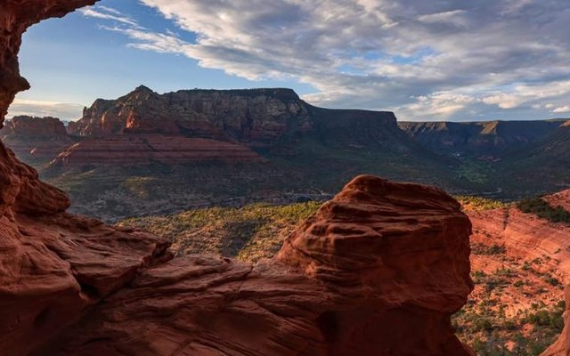
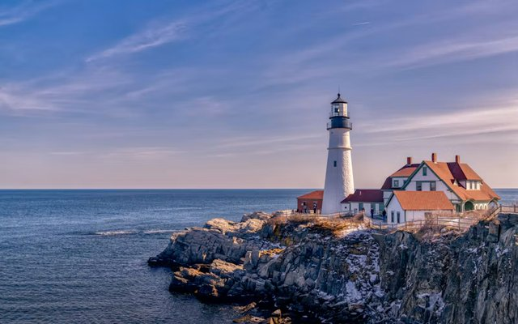
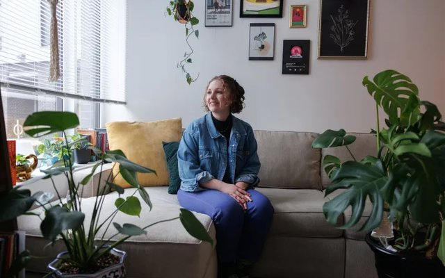
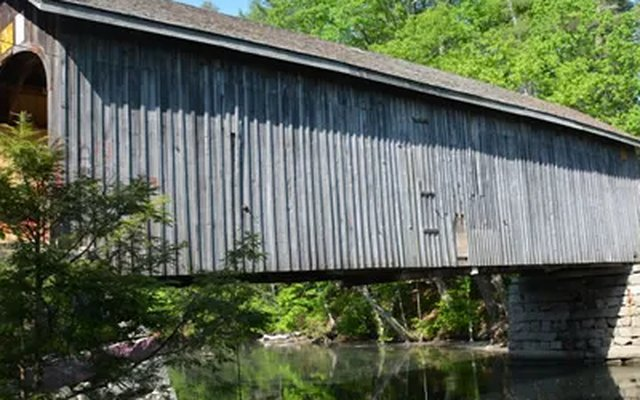

Arizona Highways — Personal Essay
Everyday Arizona: Red Rocks
A personal essay on encountering Arizona's high desert for the first time, and what the landscape surfaced about starting over somewhere new.
Read Story →Lighter in tone, still reported with care — features, guides and essays written for Maine and Arizona audiences.

A personal essay on encountering Arizona's high desert for the first time, and what the landscape surfaced about starting over somewhere new.
Read Story →
A field guide to every lighthouse dotting the Maine coastline, from the easiest day trips to the most remote.
Read Story →
Why millennial and Gen Z plant parents keep filling their apartments with greenery, long after the pandemic houseplant boom was supposed to fade.
Read Story →
A tour of Maine's historic covered bridges — and a few newer builds carrying the tradition forward.
Read Story →How a part-time Biddeford resident's photograph of Ruth Bader Ginsburg ended up as the design for a new postage stamp.
Read Story →The fine-dining restaurant credited with kickstarting Biddeford's food scene is relocating to Portland — a look at what the move means for both cities.
Read Story →Board games, trivia and arcade nights are reshaping what a night out at a Maine bar looks like.
Read Story →